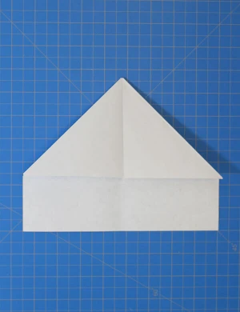
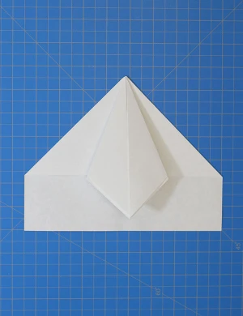
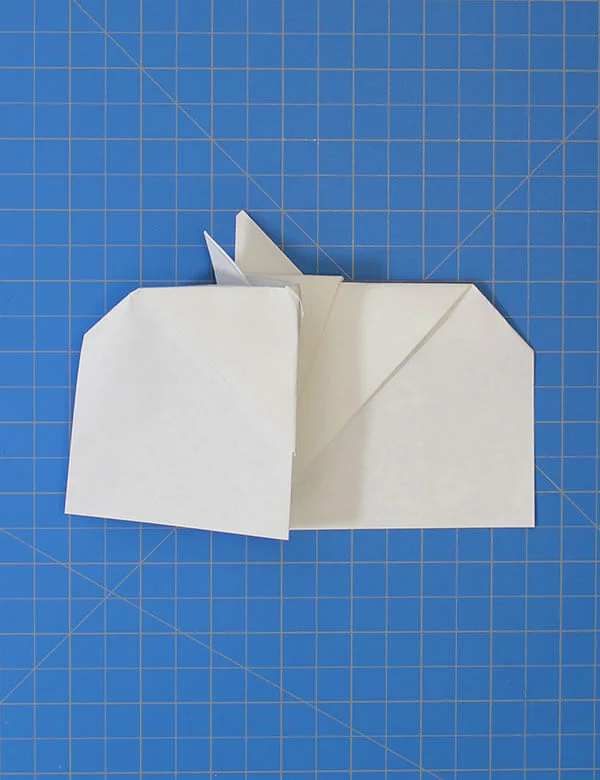

1Step 1
Crease both corners down to the sides, then open them.
Crease both corners down to the sides, then open them.

Fold the top down until those three creases align.

Open the sheet and accordion-tuck both sides inward.

On the top layer only, fold both triangle edges into the centre.

Fold the top back to the other side's bottom edge — on A4, stop about 2 cm short.

Fold both middle flaps upward.

Fold plane in half away from you as shown in the guide.

Fold down one wing as in the photo and then repeat with the other.

If you want, fold up the tips of both wings and/or cut two aileron slits on the back of each wing as shown in the guide.
With a calm day and a level throw, expect roughly 9–12 metres (about 30–39 feet). Among the 37 distance-rated designs in this collection it ranks #32. Wind, paper weight, and small crease errors all change the result.
A well-trimmed Wiggle-Throw Stunter should hold about 4–5 seconds of hang time. That places it #29 of 36 designs for time aloft. Launching from a higher spot and keeping the wings level will extend it.
It is best for tricks and loops. Folding skill is intermediate. Use Letter & A4, 9 steps, needs a cut.
Use a quick wrist snap and a fairly firm throw so the plane has enough speed to complete its maneuver.